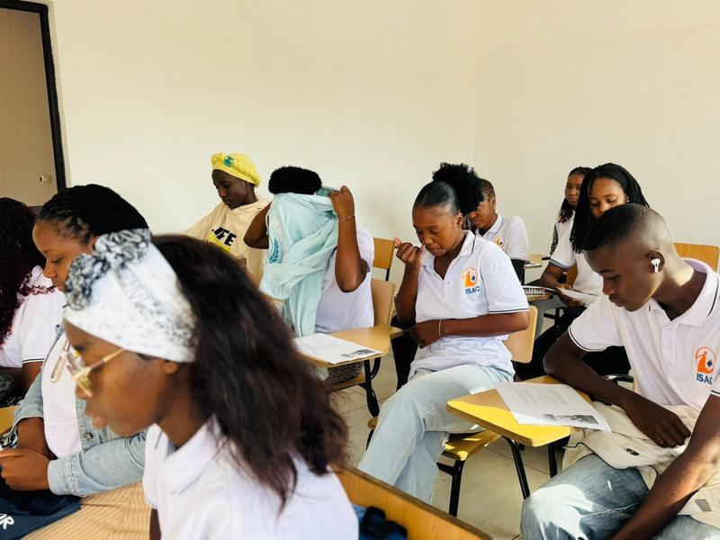
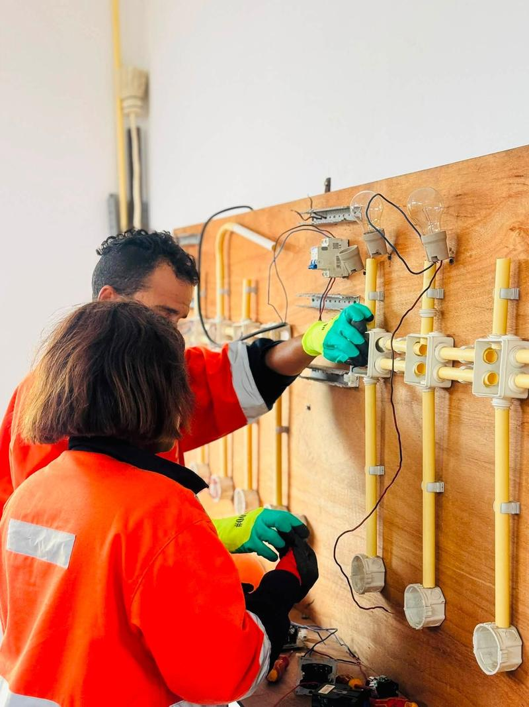
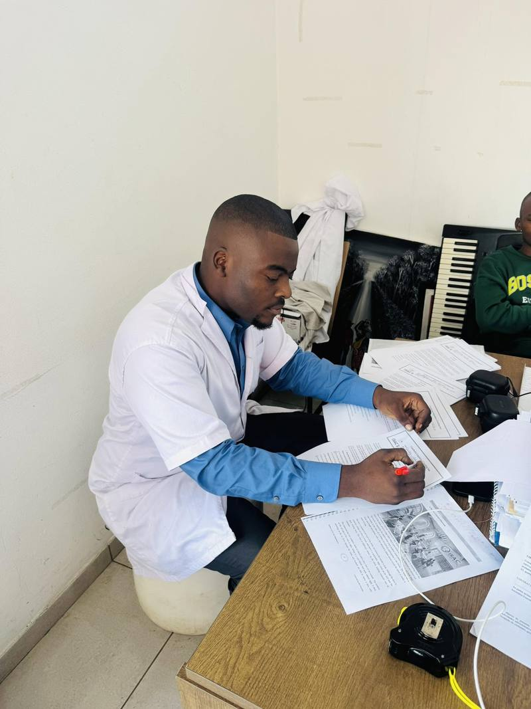

Inglês
Peça informações sobre turmas, horários e preços.
Pedir informaçõesO primeiro passo para uma vida melhor começa com uma decisão. Desenvolva novas competências e prepare-se para conquistar novas oportunidades pessoais e profissionais.
Escolha o curso que mais combina consigo.
Peça informações sobre turmas, horários e preços.
Pedir informações
Peça informações sobre turmas, horários e preços.
Pedir informaçõesPeça informações sobre turmas, horários e preços.
Pedir informações
Peça informações sobre turmas, horários e preços.
Pedir informaçõesNão vê o curso que procura? Diga-nos qual é.
PerguntarDiga qual é o curso dos seus sonhos e ganhe inscrição totalmente mahala!
Participar pelo WhatsApp
Antes de iniciar as aulas, avaliamos gratuitamente o seu nível de conhecimento para o colocar na turma mais adequada.
Faça já o seu diagnóstico gratuito e comece a aprender da forma certa.
Quatro unidades para estar perto de si.
Toque numa imagem para ampliar.
Matricule-se online de onde estiver: preencha a pré-inscrição, envie o BI e pague. Depois acompanhe notas, faltas, pagamentos e baixe os recibos.
Matricule-se online Entrar no PortalEncontre respostas rápidas sobre cursos, matrícula, pagamentos e portal.
Inglês, Mandarim, Informática e Electricidade. Não vê o curso que procura? Diga-nos qual é pelo WhatsApp e informamos se é possível.
Antes de iniciar as aulas avaliamos, sem custos, o seu nível de conhecimento para o colocar na turma mais adequada. Marque pelo WhatsApp ou numa das nossas unidades.
T3 (próximo à paragem Mangueiras), Machava 15 (em frente ao Higest), Mapandane (próximo ao mercado) e Kongolote (esquina da Konoluene). Na secção Unidades, toque no cartão para abrir a localização no Google Maps.
Pode fazer tudo online: toque em “Matricule-se online”, crie a sua conta e preencha a pré-inscrição com os seus dados e o BI. Depois pague e envie o comprovativo pelo WhatsApp. Quando a administração confirmar o pagamento, a sua conta é activada. Se preferir, pode também matricular-se numa das unidades.
Uma fotografia nítida ou PDF do BI (até 5 MB, em JPG, PNG ou PDF). Se tiver menos de 18 anos, indique também o nome e o telefone do encarregado de educação.
Variam de acordo com o curso e a turma. Ao escolher o curso na pré-inscrição aparecem a taxa de matrícula e a propina mensal, e pode indicar a turma ou o horário preferido. Para outras dúvidas, fale connosco pelo WhatsApp.
Sim. Enquanto a conta estiver pendente, entre no portal e toque em “Corrigir os meus dados”. Se a pré-inscrição for devolvida, o motivo aparece no ecrã: corrija e envie de novo.
Por M-Pesa, e-Mola, mKesh ou transferência bancária. Os dados para pagamento aparecem no portal, na área de pagamentos, ou são enviados pela secretaria no WhatsApp.
Depois de pagar, toque em “Enviar comprovativo pelo WhatsApp” no portal. A mensagem já vai preenchida com os seus dados; basta anexar a imagem ou o PDF do comprovativo.
Depois de a administração receber o comprovativo e confirmar o pagamento. Até lá, a conta fica pendente. Toque em “Verificar se já fui activado” para ver o estado.
As propinas mensais vencem no dia 10 de cada mês. No portal vê o que falta pagar e as prestações em atraso.
Entre no portal, abra “Pagamentos” e toque em “Baixar recibo” no pagamento pretendido. Na janela que abre, escolha “Guardar como PDF” (ou imprima).
Os alunos veem notas, faltas, pagamentos e recibos. Os formadores lançam notas e faltas das suas turmas.
Na página de entrada do portal, toque em “Esqueci a palavra-passe” e escreva o seu email. Enviamos uma ligação para criar uma nova.
No Android (Chrome): toque em “Instalar app” no portal ou no menu do navegador e escolha “Instalar aplicação”. No iPhone (Safari): toque em Partilhar e depois em “Adicionar ao ecrã principal”.
O BI fica guardado num espaço privado e só a administração do ISAC o vê. É usado apenas para a matrícula.
Pelo WhatsApp ou telefone: 86 51 66 752 e 87 88 16 684. Pode também visitar uma das nossas unidades.
Nenhuma pergunta encontrada. Fale connosco pelo WhatsApp.
Fale connosco pelo WhatsApp ou ligue.
Também pode ligar: 86 51 66 752 · 87 88 16 684